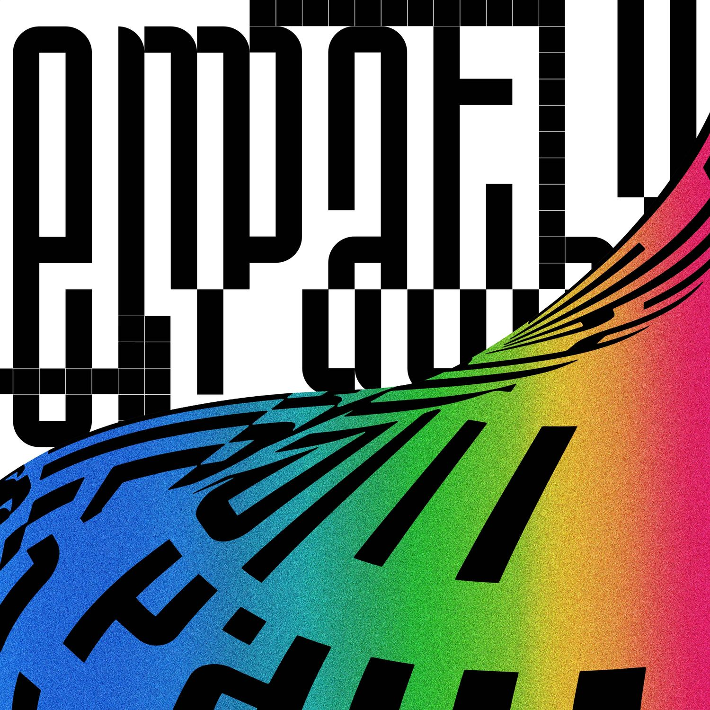

The 7th Sense
Type: Digital Single
Track List:
- The 7th Sense
(NCT U- Taeyong, Doyoung, Ten, Jaehyun, Mark)
Release Date: April 9, 2016
Without You
Type: Digital Single
Track List:
- Without You (NCT U- Taeil, Doyoung, Jaehyun)
- Without You (Chinese Ver.)
(NCT U- Kun, Taeil, Doyoung, Jaehyun)
Release Date: April 10, 2016
Timeless
Type: Digital Single
Track List:
- Timeless (NCT U- Taeil, Doyoung, Jaehyun)
Release Date: January 12, 2018
NCT 2018 Empathy

Type: Studio Album
Release Date: March 14, 2018
Coming Home
Type: Digital Single
Track List:
- Coming Home
(NCT U- Taeil, Doyoung, Jaehyun, Haechan)
Release Date: December 13, 2019
NCT Resonance Pt. 1
Type: Studio Album
Release Date: October 12, 2020
NCT Resonance Pt. 2
Type: Studio Album
Release Date: November 23, 2020
Maniac
Type: Digital Single
Track List:
- Maniac (NCT U- Doyoung, Haechan)
Release Date: August 12, 2021
CoNEXTion (Age Of Light)
Type: Digital Single
Track List:
- CoNEXTion (Age Of Light) (NCT U)
Release Date: March 20, 2022
Rain Day
Type: Digital Single
Track List:
- Rain Day (NCT U- Taeil, Kun, Yangyang)
Release Date: July 19, 2022